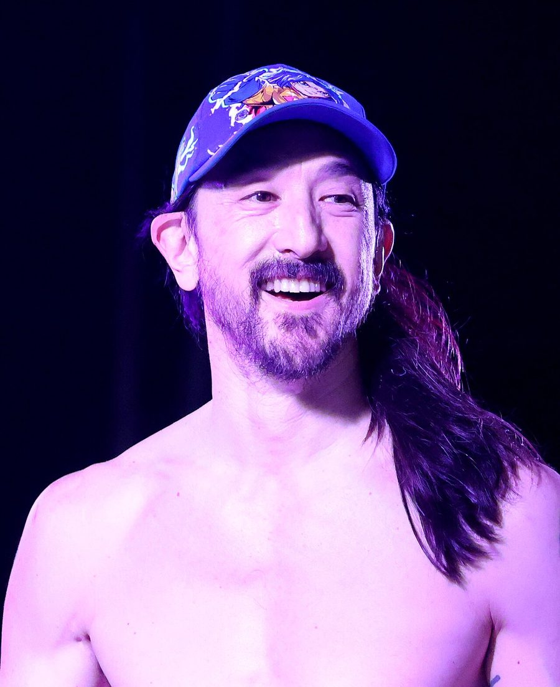

Steve Aoki & Serge Santiágo to rock Famous



Famous lovers will be treated to a massive double bill on Saturday 24th November, with hotter-than-hot UK DJ/producer Serge Santiágo being joined by newcomer Steve Aoki, also known as ‘Kid Millionaire’.
Serge Santiágo has grown to become one of the hottest producers in the UK. Performing over 30 remixes in under two years undet the Radio Slave moniker for the likes of Kylie Minogue, Fisherspooner and Tiga. More recently he’s had a massive hit with his Atto D’Amore (Act of Love) tune which he put out on his new Arcobaleno Records label.
Steve Aoki on the other hand has been making waves in the US with his indie/dance sound, providing the soundtrack to mega popular Tuesday night at Cinespace in LA as well as at Hollywood’s LAX and New York’s Marquee. He also manages one of the country’s most respected indie labels in the country Dim Mak, responsible for breaking bands like The Kills, Pretty Girls Make Graves, The Von Bondies and more.
Check em out when Steve Aoki & Serge Santiágo hit Famous on Saturday 24th November, exclusive $30 presales available from inthemix!